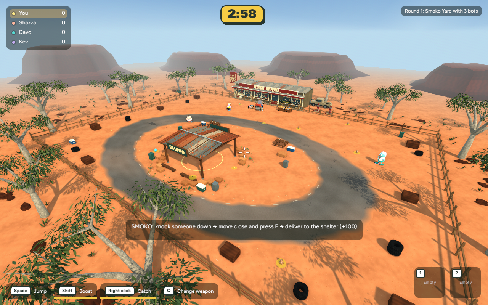

Bush Servo atmospheric depth
Same native game, camera, assets and display size. The only change is the Smoko haze: it begins a little closer and uses a slightly warmer, lighter colour so distant mesas blend into the horizon while keeping their shape.

Before: ground-cover pass
 After: softer distant mesas and horizon
After: softer distant mesas and horizon
Smoko polished Pop only. Existing fog settings restore when leaving Smoko. No gameplay or collision changes. Local native build only; browser not updated.
Checkpoint and recovery notes